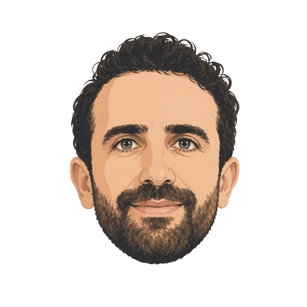

Good software shouldn't need explanations.
A systems thinker with eight years building software across corporate platforms, startups, and independent projects. I work between design and engineering, turning complex problems into simple, intuitive solutions.

- Berlin, Germany
- Platform · Product · UX
- Contract · Full-time
- EN C1 · DE B2 · AR native
What I'm hired for.
Three kinds of work, all the same discipline: reduce complexity, decide well, know what to leave out.
Product interfaces
Application UI, dashboards, and marketing surfaces built to hold up as the product grows — not just as the first screen ships.
- Next.js & React builds
- Component libraries
- Accessibility & performance
- CMS integration
Design systems & tooling
Consistency enforced by the type system rather than left to convention. Systems that make the correct thing the easiest thing to build.
- Token architecture
- Typed component APIs
- Generation tooling
- Documentation & adoption
Mobile applications
Cross-platform iOS and Android products from first screen to store listing, including the parts nobody enjoys: auth, push, review.
- React Native & Expo
- Real-time data
- Push notifications
- App Store submission
Two projects, in detail.
Client products where the constraints were real and the decisions are worth reading about.

Marineria.it
A mobile app for an Italian maritime recruitment platform. Three audiences — guests, crew, and recruiters — on one codebase, with real-time listings and honest rejection feedback instead of silence.
Read case study →
BookMarquee
X gives third parties no bookmark API, so the extension intercepts the browser's own GraphQL traffic, syncs incrementally, and stores everything locally. Zero backend, no account, nothing leaves the machine.
Read case study →Everything, on one page.
| Year | Project | Type | Stack | Status | |
|---|---|---|---|---|---|
| Ongoing | Keen Studio Cross-platform UI generation system enforcing design decisions at the type level via generateTheme() and createUI(). Component library and theme engine live; CLI and visual configurator in development. | Dev tools | TypeScript · React · RN | In progress | ↗ |
| 2026 | Discrep A framework and tool for closing the gap between stated values and actual behaviour — by showing the pattern rather than prescribing the fix. | Concept | — | Position paper | ↗ |
| 2026 | BookMarquee A Chrome extension turning X bookmarks into a searchable, local-only knowledge base. No backend, no account. | Side project | React · TS · Vite · MV3 | Published | ↗ |
| 2026 | oneMore A cigarette tracker built to make you notice, not to make you quit. No streaks, no lectures. | Side project | TypeScript · React Native · Expo | App Store | ↗ |
| 2026 | Marineria.it Mobile app for a maritime recruitment platform. Real-time listings, crew profiles, recruiter tooling, iOS and Android. | Client work | TypeScript · React Native · Expo | Shipped | ↗ |
| 2019 | Wahl-O-Mat Interface analysis and interactive Figma prototypes for Germany’s voting-advice tool, validated through direct user feedback. | UX research | Figma · User research | Delivered | ↗ |
| 2023 | Moviemiento Custom bilingual WordPress theme for a Berlin cinema non-profit that screens films from bicycles. Hand-written PHP and CSS, no page builder. | Client work | PHP · WordPress | Live | ↗ |
What shipped, and when.
Three products shipped independently
Marineria.it · oneMore · BookMarqueeA client mobile app on both stores, an App Store release of my own, and a cross-browser extension — designed, built, and submitted end to end.
Keen Studio in development
Design systems · ProductComponent library and theme engine live; CLI and visual configurator in active development.
Software Developer UI/UX
Verbraucherzentrale BundesverbandBridged design and backend on a national consumer-protection platform; made complex forms configurable and dynamic.
Software Developer
LQ EnterpriseBuilt the central UI component library used across multiple product teams, plus dynamic form generators and real-time features.
Software Engineer
kloeckner.iShipped web applications across Phoenix, Rails, Ember, and Vue.js; introduced automated testing and led production releases.
Volunteer instructor
ReDI School of Digital IntegrationTaught web development fundamentals to students with refugee and migration backgrounds.
Notes on the work.
Interface ethics, engineering culture, and the occasional detour. Written slowly.
| Date | Title | Topic | |
|---|---|---|---|
| May 2026 | Croissant as a statement Camus asks us to imagine Sisyphus happy. It sounds simple until you try to live it. | Philosophy | ↗ |
| Mar 2025 | On the politics of interface design Every button is a decision. Every form is a stance. Design is never neutral. | Politics | ↗ |
| Feb 2025 | What it means to finish something I have a graveyard of half-built things. I think most developers do. | Philosophy | ↗ |
| Jan 2025 | The frontend is never just frontend You can't separate the UI from the system it lives in. Anyone who says otherwise hasn't shipped enough. | Engineering | ↗ |
You have an idea. I've shipped eight years of them.
Available for contract and full-time work from Q4 2026 — Berlin, or remote across European hours.